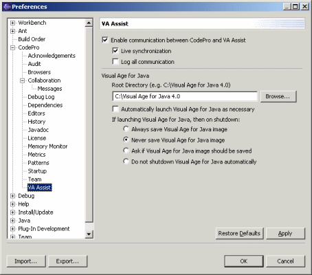

Preferences - VA Assist -
Obsolete
Windows Only
- Deprecated in Codepro 4.0

This page is used to control various VA Assist integration options.
Enable communication between CodePro and VA Assist
This option causes a socket communication session to be established between CodePro and
VA Assist (running in VA Java) at startup. This is required in order to use the "Edit
GUI" or "Edit BeanInfo" commands or support live synchronization from VA
Java. Live synchronization with VA Java can be enabled or disabled via the "Live
synchronization" option. The "Log all communication" option controls
whether communication between CodePro and VA Assist is logged to the CodePro log.
Turn this option off to improve
startup performance.
Root Directory
In order to use the "Edit GUI" or "Edit BeanInfo" commands, CodePro
needs to drive VA Java in "slave" mode. In order to do that, it needs to know
which version of VA Java you would like to start. Enter the location of your VA Java root
directory into this field.
Automatically launch VisualAge for Java as necessary
In order to use the "Edit GUI" or "Edit BeanInfo" commands, CodePro
needs to drive VA Java in "slave" mode. This option controls whether VA Java
will be automatically started or not.
Shutdown Options
Any time that CodePro starts up VA Java in slave mode, it can shut down VA Java
when Application Developer/Eclipse is shut down. Options are provided to shut down VA Java with or without
saving the VA Java workspace, with prompting or not at all. |